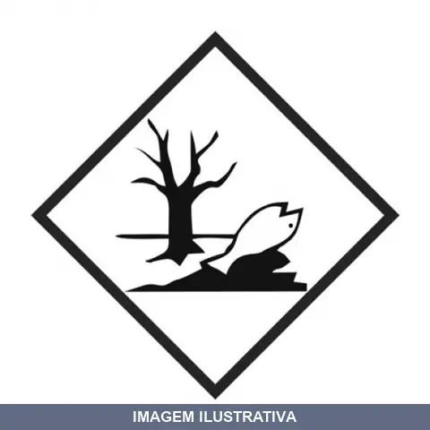
ADESIVO MEIO AMB SEGMENTO
Adesivo de advertência para sinalização de segurança ambiental. Indicação de Uso: Identificação e alerta sobre riscos ambientais em áreas de trabalho, máquinas e equipamentos. Material e Resistência: Adesivo com acabamento branco, resistente a intempéries e aderência durável em superfícies diversas. Vantagem Prática: Comunicação clara de avisos de proteção ambiental, contribuindo para a segurança ocupacional e conformidade com normas de sinalização.
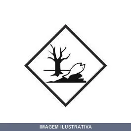
ADESIVO MEIO AMBIENTE SEGMENTO
Adesivo autocolante de sinalização de risco ambiental, com símbolo de perigo ao meio ambiente (losango preto e branco), indicado para identificação de produtos e embalagens no transporte de cargas. Aplicação simples por colagem direta na superfície, mantendo boa visibilidade e durabilidade em ambientes internos e externos.
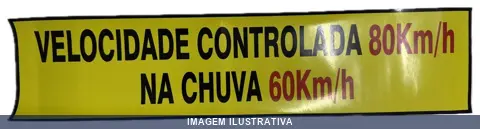
ADESIVO VEL CONT 80KM/H NA CHUVA 60KM/H SEGMENTO
Indicação de Uso: Adesivo de sinalização informativo 'Velocidade Controlada 80Km/h na Chuva 60Km/h', para fixação em veículos ou áreas que exigem aviso de limite de velocidade. Material e Resistência: Adesivo de contato permanente, resistente à umidade e variações climáticas. Vantagem Prática: Oferece aderência durável e uniforme para aplicações de sinalização.
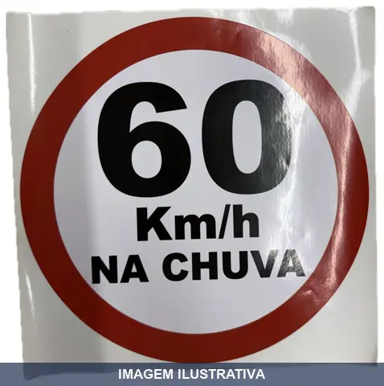
ADESIVO VEL CONT DIAMETRO 60KM/H NA CHUVA SEGMENTO
Indicação de Uso: Sinalização veicular autocolante para indicação de velocidade máxima permitida em veículos. Aplicação em superfícies lisas da carroceria. Material e Resistência: Adesivo autocolante resistente a intempéries, raios UV e umidade. Remoção limpa sem resíduos. Vantagem Prática: Instalação simples em superfícies lisas, sem necessidade de ferramentas ou preparação especial.
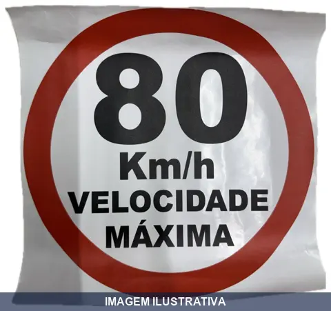
ADESIVO VEL CONT DIAMETRO 80KM/H SEGMENTO
Indicação de Uso: Sinalização na traseira de veículos indicando velocidade máxima permitida controlada. Material e Resistência: Vinil automotivo autocolante. Resistente a chuva e raios UV. Durabilidade estimada entre 2 a 5 anos dependendo da aplicação e exposição solar. Vantagem Prática: Aplicação sem uso de produtos adicionais. Fácil remoção sem danificar a superfície do veículo.
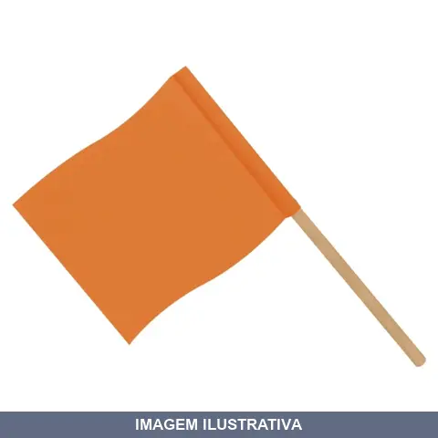
BANDEIROLA LARANJA 30CMX PLASTCOR
Indicação de Uso: Sinalização e demarcação de áreas, obstáculos e pontos de atenção em canteiros de obra, vias e locais de trabalho. Material e Resistência: Confeccionada em plástico, oferece resistência a intempéries e uso contínuo em ambientes externos. Vantagem Prática: Fácil visualização pela cor laranja vibrante, facilitando a identificação rápida de zonas de risco e orientação de fluxo.
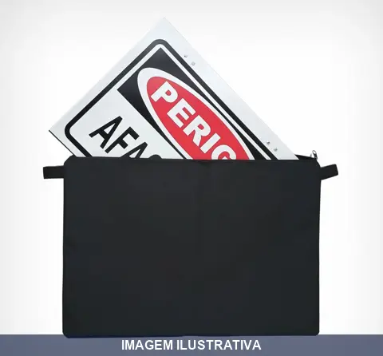
BOLSA PARA PLACA COM DIVISAO SEGMENTO
Bolsa para transporte e organização de placas com cinco divisões internas. Estrutura de segmento facilita o armazenamento e proteção de placas durante o transporte. Indicada para profissionais que trabalham com instalações elétricas, hidráulicas e manutenção predial. Divisões permitem separação e organização de diferentes tipos de placas.
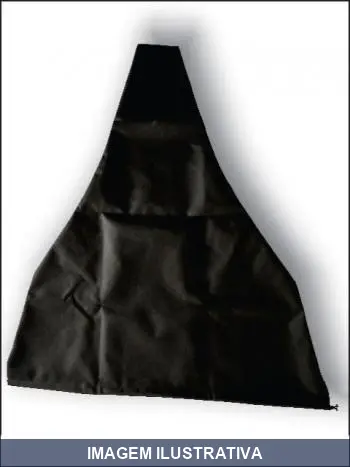
CAPA PARA CONE PRETA SEGMENTO
Capa protetora preta destinada a cobrir cones de sinalização. Confeccionada em material resistente, protege o cone contra intempéries, poeira e danos durante armazenamento e transporte. Aplicação em obras, canteiros, eventos e demarcação de áreas.
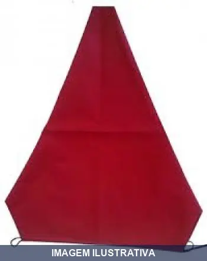
CAPA PARA CONE VERMELHA SEGMENTO
Indicação de Uso: Proteção de cones de sinalização em áreas de trânsito, obras e eventos. Material e Resistência: Fabricada em PVC laminado com cordão de nylon e regulador de fechamento. Resiste a sujeira, atritos e condições climáticas. Vantagem Prática: Mantém os cones protegidos e limpos. Fácil limpeza com sabão neutro e pano úmido.
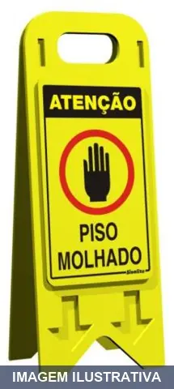
CAVALETE CUIDADO PISO MOLHADO
CAVALETE EM POLIESTIRENO 20 X 53 CM ATENÇÃO PISO MOLHADO PORTUGUES - INGLES
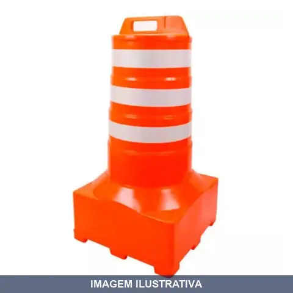
CONE BARRIL REFLETIVO LARANJA/BRANCO FORTLINE
Cone de sinalização injetado em PVC flexível, cor laranja com faixas refletivas brancas. Indicado para delimitação de áreas, segurança em obras, eventos, trânsito e controle de fluxo. Material resistente e durável para uso interno e externo.
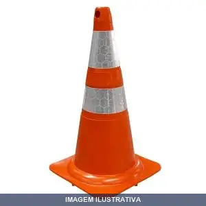
CONE EMBORRACHADO COM CALCO BRANCO/LARA 2F NBR FORTLINE
Cone de sinalização emborrachado com faixas refletivas. Material flexível com base estável para uso em sinalização de tráfego, delimitação de áreas, canalização, estacionamentos e obras. Conformidade com normas de segurança NBR 15071 e NBR 14664.
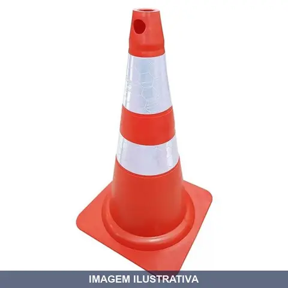
CONE EMBORRACHADO SEM CALCO BRANCO/LARANJA 2F FORTLINE
Cone de sinalização flexível emborrachado em PVC, cor laranja com branco. Possui duas faixas refletivas conforme normas ABNT. Fabricado em peça única permitindo dobragem sem prejuízo ao formato. Resistente às intempéries e proteção contra raios UV. Adequado para sinalizar, canalizar e orientar tráfego em rodovias, estacionamentos, postos de combustíveis e áreas comerciais.
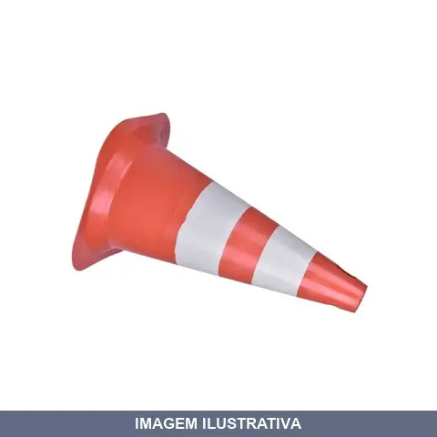
CONE EMBORRACHADO SEM CALCO BRANCO/LARANJA 2F PLASTCOR
Cone de sinalização emborrachado com corpo laranja e 2 faixas refletivas brancas. Base sem calço, com sapatas de apoio para sustentação. Indicado para demarcação de áreas, controle de tráfego, delimitação de espaços em estacionamentos, obras, eventos e postos de combustível. Material resistente e flexível com drenagem de água.
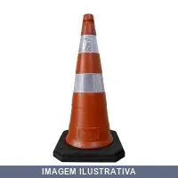
CONE PL LARANJA/BRANCO COM SAPATAS PLASTCOR
Cone de sinalização injetado em PVC na cor laranja fluorescente. Possui duas faixas refletivas na cor branca, confeccionadas em PVC micro prismático. Base com 8 sapatas para sustentação e estabilidade. Flexível, permite ser dobrado sem prejuízo do formato original. Resistente às intempéries climáticas e proteção contra raios UV. Utilizado para controle de tráfego, canalização, direcionamento e delimitação de áreas em estacionamentos, postos de combustíveis, obras e similares.
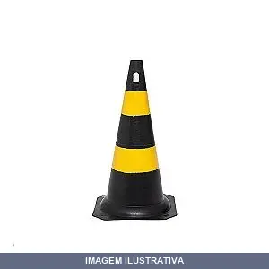
CONE PVC AMARELO/PRETO
Cone de sinalização em PVC, nas cores amarelo e preto. Indicado para sinalização de obras, eventos, trânsito e demarcação de áreas. Material resistente e durável. Fácil de transportar e posicionar.
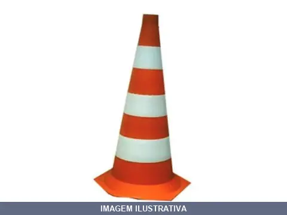
CONE PVC BRANCO/LARANJA
Cone de sinalização em PVC com cores contrastantes branco e laranja. Indicado para demarcação de áreas, orientação de trânsito e segurança em obra. Material resistente e visibilidade garantida pela combinação de cores.
CORRENTE PVC ELO GRANDE AMARELA PLASTCOR
Indicação de Uso: Corrente para aplicações gerais de fixação, amarração e suspensão em ambientes internos e externos. Material e Resistência: Fabricada em PVC, oferece resistência à corrosão e à umidade. Vantagem Prática: Elo grande facilita o manuseio e a visualização. Cor amarela para identificação em espaços de trabalho.
CORRENTE PVC ELO GRANDE BRANCA PLASTCOR
Indicação de Uso: Sinalização, isolamento de áreas e delimitação de espaços. / Material e Resistência: Fabricada em PVC, oferece resistência à intempérie e durabilidade. / Vantagem Prática: Leve, flexível e fácil de instalar, adequada para ambientes internos e externos.

CORRENTE PVC ELO GRANDE PRETA AMARELA PLASTCOR
ACESSORIO PARA PEDESTAL GRANDE - PRETA/ AMARELA CORRENTE PLASTICA ELO GRANDE ZEBRADA AM/PR COD ALFA 103
CORRENTE PVC ELO PEQUENA PRETA AMARELA PLASTCOR
Indicação de Uso: Sinalização, demarcação de áreas, isolamento de espaços e organização visual em geral. Material e Resistência: Fabricada em PVC injetado, oferecendo resistência adequada para aplicações de sinalização e delimitação. Vantagem Prática: Leve e resistente, as cores preta e amarela proporcionam alto contraste visual para melhor identificação de áreas.
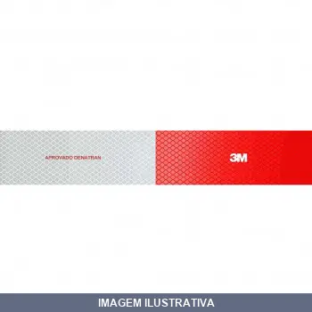
FAIXA REFL LATERAL DIREITA 3M
983-326 CONSP 50 X 305 MM LADO DIREITO OEM FAIXAS LATERAL Faixa Refletiva 3M para lateral e traseira de caminhões e ônibus Veículos de grande porte como caminhões e ônibus precisam de sinalização apropriada que garanta visibilidade e ajude a prevenir acidentes de transito. E a 3M, uma empresa com liderança tecnológica e compromisso em criar produtos e soluções que aumentem a segurança no trânsito possui uma linha completa para identificação e sinalização de veículos, com materiais refletivos de
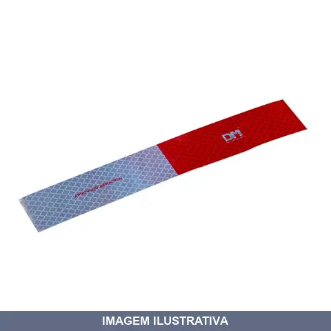
FAIXA REFL LATERAL DIREITA DM REFLETIVOS
Faixa refletiva lateral com película autoadesiva de aplicação em veículos de grande porte. Construída com microprismas encapsulados em resina sintética transparente que proporciona retrorefletividade e visibilidade noturna. Aprovada pelo DENATRAN conforme padrão de segurança exigido. Composição acrílica com durabilidade estimada de 10 anos e resistência a alta pressão. Aplicação obrigatória em caminhões, vans e ônibus.
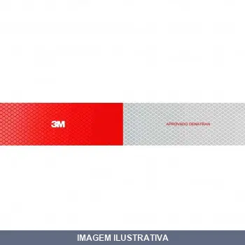
FAIXA REFL LATERAL ESQUERDA 3M
Indicação de Uso: Sinalização lateral esquerda de veículos de grande porte (caminhões, ônibus) para aumentar visibilidade noturna e em condições de baixa luminosidade, prevenindo acidentes de trânsito. Material e Resistência: Faixa refletiva com tecnologia de retroreflexão, resistente à intempérie e durável em aplicações externas. Vantagem Prática: Atende requisitos de segurança viária, facilitando a identificação do veículo por outros motoristas em qualquer condição climática.
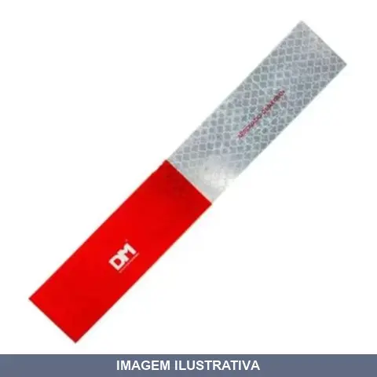
FAIXA REFL LATERAL ESQUERDA DM REFLETIVOS
Indicação de Uso: Sinalização lateral esquerda de veículos para aumentar visibilidade em condições de baixa luminosidade. Material e Resistência: Faixa refletiva com propriedades refletoras que retornam luz para sua fonte. Vantagem Prática: Melhora a identificação do veículo à noite e em períodos com pouca luz natural.
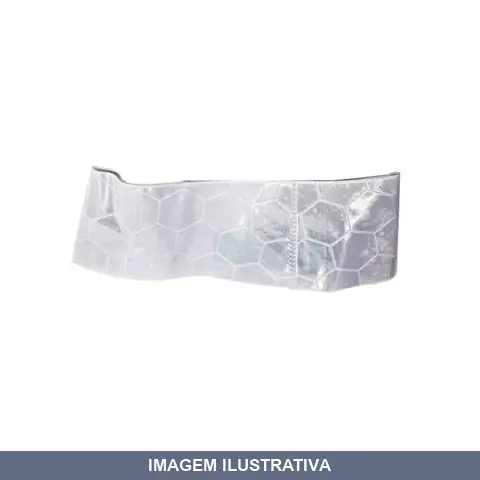
FAIXA REFL PARA CONE INFERIOR PLASTCOR
Faixa refletiva em PVC confeccionada para aplicação na parte inferior de cones de sinalização. Material flexível que permite fácil aplicação e adaptação. Cor branca com propriedades refletivas, oferecendo visibilidade em condições de baixa luminosidade. Resistente a intempéries como sol e chuva, indicada para sinalização de trânsito, obras, estacionamentos e eventos.
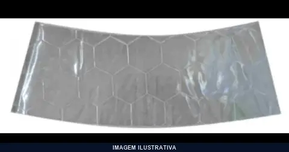
FAIXA REFL PARA CONE SUPERIOR PLASTCOR
Faixa refletiva branca para aplicação em cones de sinalização. Confeccionada em material refletivo de alta visibilidade. Indicada para sinalização de trânsito, estacionamentos, obras e eventos. Aplicação simples e rápida, proporcionando visibilidade em condições de baixa luminosidade.

FAIXA REFL PARA-CHOQUE DIREITA 3M
Faixa refletiva adesiva para para-choque direito de caminhões e veículos de grande porte. Proporciona visibilidade noturna e em condições de baixa luminosidade, aumentando a segurança no trânsito. Indicação de Uso: Sinalização de para-choques traseiros e laterais de veículos comerciais. Material e Resistência: Filme refletivo de alta intensidade, resistente a intempéries e abrasão. Vantagem Prática: Aplicação adesiva, fácil instalação sem necessidade de ferramentas.
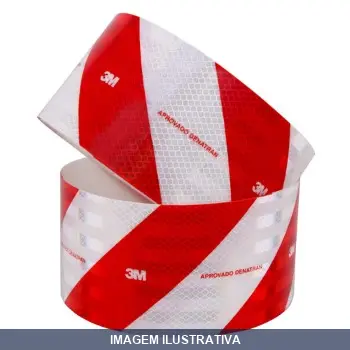
FAIXA REFL PARA-CHOQUE ESQUERDA 3M
Faixa refletiva vermelha e branca para para-choque de veículos de grande porte. Indicação de Uso: sinalização traseira de caminhões e ônibus para aumentar visibilidade noturna e prevenir acidentes. Material e Resistência: fita adesiva refletiva com durabilidade em condições climáticas adversas. Vantagem Prática: melhora a percepção do veículo por outros motoristas em baixa luminosidade.
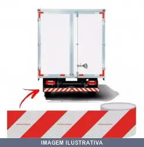
FAIXA REFL PARA-CHOQUE INTEIRA TRASEIRO
Faixa refletiva para para-choque traseiro inteiro de veículo. Indicação de Uso: Aplicação em para-choque traseiro para aumentar visibilidade e segurança veicular. Material e Resistência: Película refletiva autoadesiva de alta visibilidade. Vantagem Prática: Melhora a visibilidade do veículo em condições de pouca luminosidade e tráfego noturno.
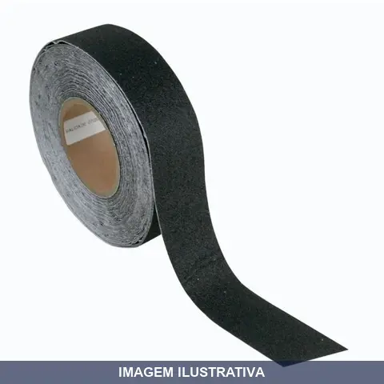
FITA ANTIDERRAPANTE 50MMX AFA/ WORKER
FITA ANTIDERRAPANTE PRETA COD 600 50MM X 20 METROS NF 257715: 692778 FITA ANTIDERRAPANTE 50MM X 20 M PRETA - WORKER

FITA ANTIDERRAPANTE 50MMX PRETA AFA/WORKER
FITA ANTIDERRANPANTE PRETA COD: 600 50 MM X 5 METROS NF 257715 : 692719 FITA ANTIDERRAPANTE 50MM X 5 M PRETA - WORKER
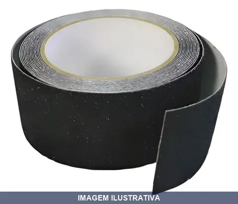
FITA ANTIDERRAPANTE 50MMX PRETA NOVES54
Indicação de Uso: Superfícies que necessitam prevenção de escorregamentos, como escadas, degraus, rampas e pisos. Material e Resistência: Fita adesiva com propriedade antiderrapante na cor preta. Vantagem Prática: Oferece aderência e segurança ao caminhar em áreas molhadas ou com risco de queda.

FITA ANTIDERRAPANTE 50MMX PRETA PLUS LOTUS
Indicação de Uso: Aplicação em superfícies onde há risco de escorregamento, como escadas, degraus, pisos molhados e áreas de circulação. Material e Resistência: Fita adesiva com propriedade antiderrapante, cor preta. Vantagem Prática: Oferece aderência e segurança ao caminhar em superfícies lisas ou úmidas, reduzindo riscos de acidentes.
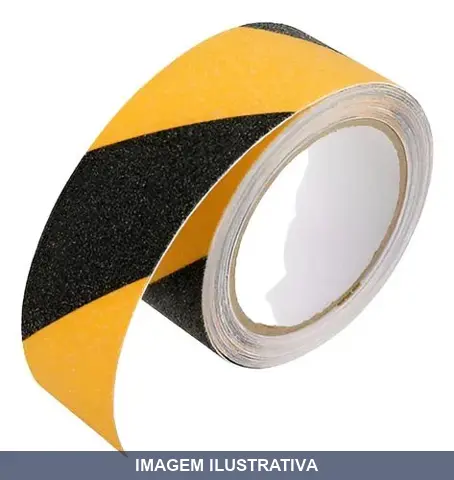
FITA ANTIDERRAPANTE 50MMX PRETA/AMARELA PLUS LOTUS
Indicação de Uso: Sinalização e prevenção de acidentes em escadas, degraus, superfícies e áreas de circulação. Material e Resistência: Fita adesiva antiderrapante com padrão de cores contrastantes preto e amarelo para visualização. Vantagem Prática: Aumenta a segurança ao evitar escorregamentos em pisos molhados ou lisos.
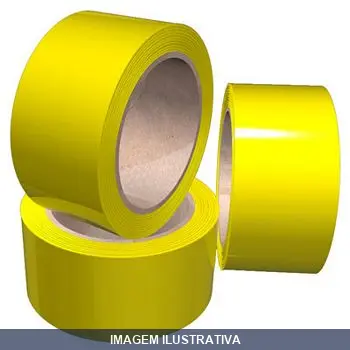
FITA DEMARCACAO AMARELA 48MMX BRASFORT
Indicação de Uso: Demarcação de solo, filas, quadras, vagas de garagem, vedação e lacração de embalagens, sinalização de portas de vidro. Ideal para sinalizar áreas de risco e delimitar espaços em ambientes residenciais, comerciais e industriais. Material e Resistência: Fabricada em filme de PVC com adesivo à base de borracha. Apresenta ótima resistência à abrasão e conformabilidade em pisos de diversos materiais. Vantagem Prática: Adesivo de rápida fixação que não deixa resíduos de cola.
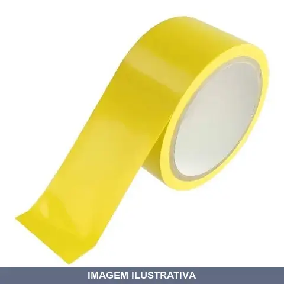
FITA DEMARCACAO AMARELA 48MMX PLUS LOTUS
Indicação de Uso: Demarcação de áreas, sinalização de zonas de perigo, isolamento de espaços e demarcação de piso em ambientes internos e externos. Material e Resistência: Fita adesiva com coloração amarela de alta visibilidade, resistente ao uso contínuo. Vantagem Prática: Fixação rápida e prática para delimitação de áreas sem necessidade de ferramentas adicionais.

FITA DEMARCACAO AMARELA 50MMX AFA
FITA PVC COD: 520 DEMARCAÇÃO 0,15MM AMARELA 50 MM X 30 METROS
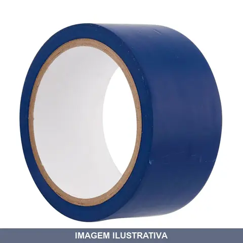
FITA DEMARCACAO AZUL 50MMX AFA
Fita adesiva para demarcação de solo, aplicação em quadras poliesportivas, indústria, estacionamentos e sinalização geral. Composta por filme de PVC com adesivo à base de borracha. Indicada para demarcação de pisos, vidros e tubulações. Oferece resistência ao desgaste e boa aderência em superfícies lisas e limpas.
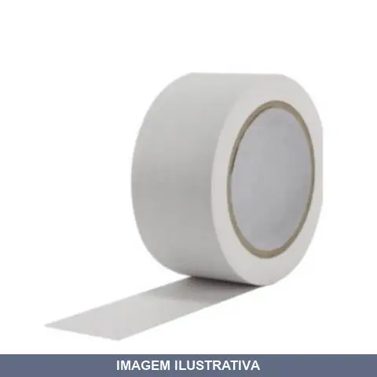
FITA DEMARCACAO BRANCA 50MMX AFA
FITA PVC COD 522 DEMARCAÇÃO 0,15 MM BRANCO 50MM X 30 METROS
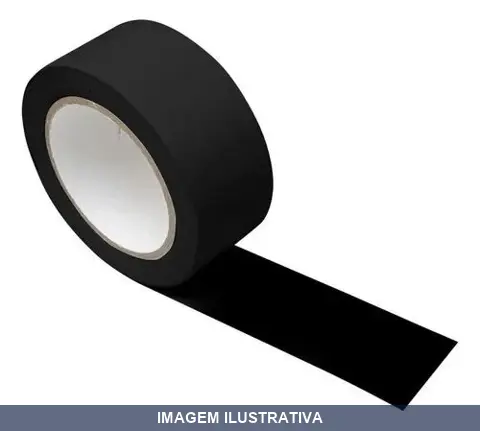
FITA DEMARCACAO PRETA 50MMX AFA
Fita para demarcação de áreas em cor preta. Indicada para sinalização de zonas de segurança, delimitação de espaços e avisos de risco em ambientes industriais, comerciais e de construção. Material adesivo com resistência adequada para aplicação em superfícies planas.
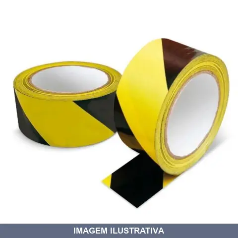
FITA DEMARCACAO PRETA/AMARELA 48MMX BRASFORT
Indicação de Uso: Demarcação de áreas de risco, isolamento de espaços, sinalização residencial, comercial e industrial. Material e Resistência: Filme de PVC coberto com adesivo à base de acrílico solvente. Padrão zebrado com listras pretas e amarelas alternadas para visibilidade. Vantagem Prática: Aplicação rápida e fácil, não deixa resíduos, oferece boa resistência e durabilidade em ambientes internos e externos.

FITA DEMARCACAO PRETA/AMARELA 48MMX14M
Fita adesiva para demarcação de solo, feita com filme de PVC revestido com adesivo à base de borracha e resina. Indicada para indústrias, comércios, sinalização de locais, filas, estacionamentos, extintores de incêndio e rotas de fuga. Uso interno e externo. Apresenta adesão e resistência à abrasão.
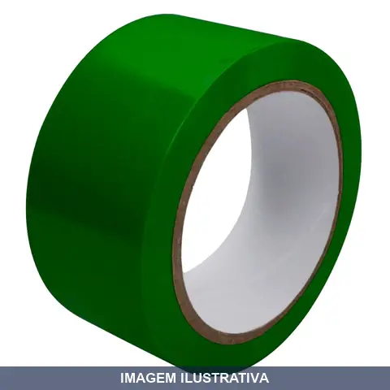
FITA DEMARCACAO VERDE 50MMX AFA
FITA PVC COD525 DEMARCAÇÃO 0,15MM VERDE 50MM X 30 METROS

FITA DEMARCACAO VERMELHA 48MMX BRASFORT
Indicação de Uso: Destaques, sinalização e demarcação de áreas de risco, espaços para organização e delimitação de locais em ambientes residenciais, comerciais e industriais. Material e Resistência: Fabricada em PVC na cor vermelha, coberta com adesivo à base de acrílico solvente. Vantagem Prática: Adesiva com fixação para marcação segura e durável de superfícies.
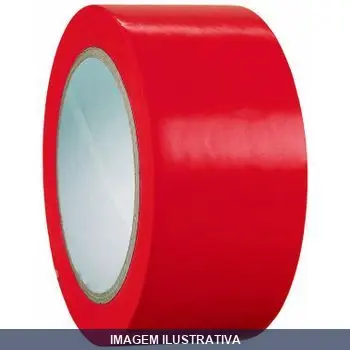
FITA DEMARCACAO VERMELHA 50MMX AFA
FITA PVC COD 521 DEMARCAÇÃO 0,15 MM VERMELHO 50 MM X 30 METROS
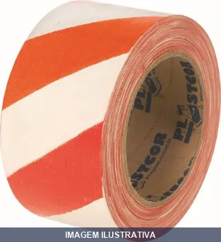
FITA ZEBRADA LARANJA/BRANCA 100MT PLASTCOR
Indicação de Uso: Demarcação de áreas de risco, sinalização de segurança e isolamento de zonas perigosas. Material e Resistência: Fita plástica com padrão zebrado em laranja e branco. Vantagem Prática: Fácil identificação visual de áreas restritas e perigos potenciais.
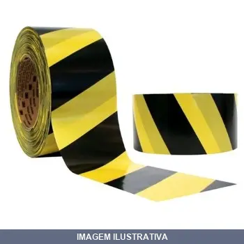
FITA ZEBRADA PRETA/AMARELA 100MT PLASTCOR
Indicação de Uso: Sinalização e demarcação de áreas de risco, perigo ou restrição em ambientes internos e externos. Material e Resistência: Fita adesiva em PVC com padrão de cores alternadas preto e amarelo. Vantagem Prática: Proporciona alta visibilidade para identificação rápida de zonas perigosas, facilita a organização de espaços e segurança no trabalho.
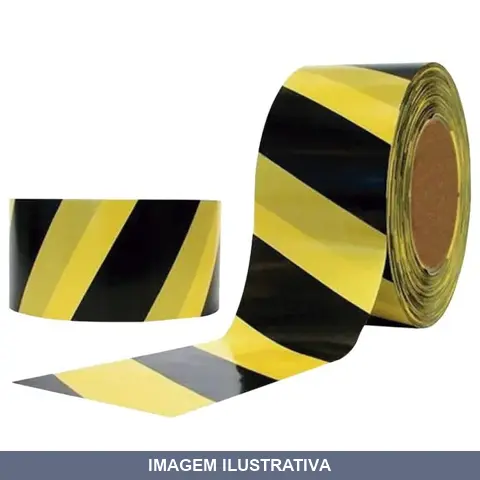
FITA ZEBRADA PRETA/AMARELA 200MT LOTUS
Fita para demarcação e isolamento de áreas, produzida em filme de polietileno sem adesivo, com padrão zebrado em cores amarela e preta. Indicada para sinalização de zonas de perigo, áreas em manutenção e controle de circulação em ambientes internos e externos. Material resistente e leve, prático de aplicar e remover.
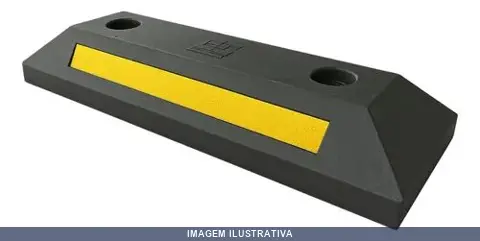
LIMITADOR DE VAGA-SEGREGADOR ANGARE
Indicação de Uso: Limitador de vaga para estacionamentos e áreas de circulação, controla e segrega espaços de parada de veículos. Material e Resistência: Estrutura em borracha, resistente a impactos e intempéries. Vantagem Prática: Delimitação clara de vagas, organização do espaço e segurança no trânsito interno.
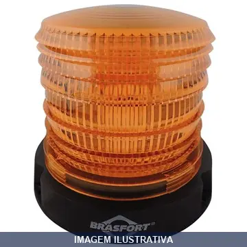
LUMINARIA EMERGENCIA GIROFLEX LED BRASFORT
Sinalizador LED Giroflex com funcionamento 10-30V, fabricado em plástico ABS e polietileno. Possui chave interna com três estágios de iluminação ajustáveis através da rotação da cúpula âmbar. Base magnética e acompanha cabo espiral de 2,9 metros.
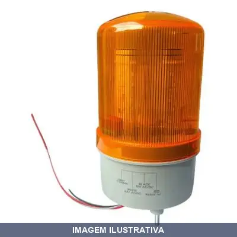
LUZ GIROFLEX // // E AMARELA A.SANTOS
Luz giroflex giratória na cor amarela, sem sirene. Alimentação com seleção de voltagem 12V, 24V, 110V ou 220V conforme modelo. Corpo resistente adequado para sinalização de emergência. Indicada para trabalhos em veículos, embarcações, guinchos e operações que requeiram sinalização visual de alerta.
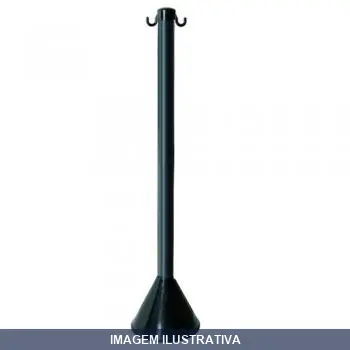
PEDESTAL PR PLASTCOR
Indicação de Uso: Sinalização e segurança, organização de filas, isolamento e demarcação de áreas em ambientes internos ou externos, indústrias, estacionamentos e eventos. Material e Resistência: Composto por base em polipropileno, tubo em PVC e tampa em poliacetal com dois ganchos opostos. Resistente a impactos e condições externas. Vantagem Prática: Leve e fácil montagem. Gancho para fixação de correntes e fitas de sinalização em duas posições opostas.
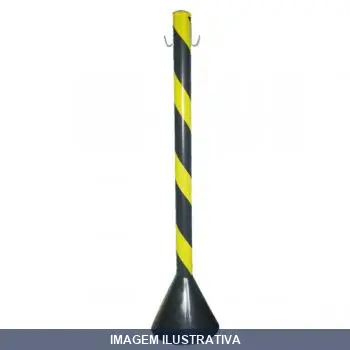
PEDESTAL PRETO/AMARELO PLASTCOR
PEDESTAL PLASTICO ZEBRADO PRETO/ AMARELO 90 CM DESMONTADO
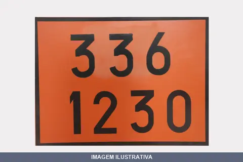
PLACA 30X40 336-1230 SEGMENTO
Placa de sinalização numerada para identificação e organização. Indicação de Uso: Identificação de ambientes, equipamentos e áreas em geral. Material e Resistência: Plástico resistente. Vantagem Prática: Facilita localização e organização através de numeração clara e legível.
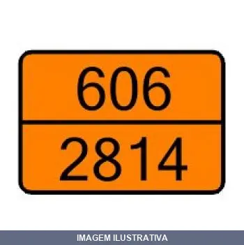
PLACA 30X40 606-2814 SEGMENTO
Placa de segmento para uso em ferragens e construção. Indicação de Uso: aplicações em montagens, fixações e trabalhos gerais de ferraria. Material e Resistência: estrutura adequada para aplicações convencionais. Vantagem Prática: componente funcional para diversos projetos de manutenção e construção.
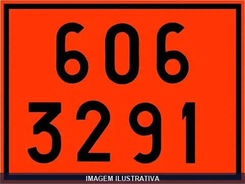
PLACA 30X40 606-3291 PLASTCOR
Placa de sinalização ou identificação em material plástico. Indicada para identificação, demarcação e sinalização de áreas, produtos ou equipamentos em ambientes internos e externos. Material resistente a impactos e variações climáticas. Aplicável em residências, comércios, indústrias e espaços públicos.
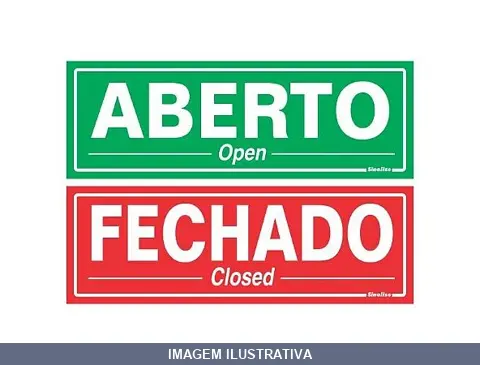
PLACA ABERTO/FECHADO SINALIZE
Placa de sinalização em poliestireno com mensagem reversível ABERTO/FECHADO em português e inglês. Indicação de Uso: sinalização de estabelecimentos comerciais e empresariais. Material e Resistência: poliestireno resistente. Vantagem Prática: permite alternar rapidamente entre os dois estados sem necessidade de troca de placa.
PLACA ADMINISTRACAO SINALIZE
Indicação de Uso: Identificação de setores administrativos em empresas, instituições e organizações. Facilita a localização e orientação para funcionários, visitantes e público em geral. Material e Resistência: Fabricada em PVC ou poliestireno, formato retangular com a palavra "Administração" centralizada. Acompanha fita dupla face autocolante de qualidade para instalação. Vantagem Prática: Fixação rápida em superfícies lisas, internas ou externas. Pronta para instalação, dispensando
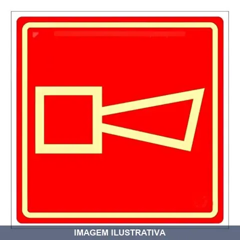
PLACA ALARME SONORO DEL GROSSI
Placa de sinalização para indicar presença de alarme sonoro em ambientes. Utilizada em instalações de segurança e emergência para sinalizar visualmente a existência de sistema de alerta. Material em alumínio ou PVC. Indicação de Uso: Ambientes que exigem aviso de segurança ou perigo. Vantagem Prática: Identifica claramente a localização de dispositivos de alarme para rápido reconhecimento em situações de emergência.
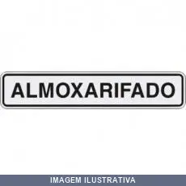
PLACA ALMOXARIFADO SINALIZE
Placa de sinalização com inscrição "Almoxarifado" para identificação clara do setor. Disponível em alumínio anodizado 0,5 mm ou poliestireno. Fixação auto-adesiva. Durabilidade de 36 meses em ambiente interno ou 12 meses em externo. Indicado para locais sem excessiva luz solar.
PLACA ALTA TEMPERATURA SEGMENTO 30X30
Indicação de Uso: Placa de sinalização de segurança para alertar sobre risco de alta temperatura em ambientes industriais e áreas de trabalho, advertindo trabalhadores sobre o perigo. Sinalização: Placa com texto 'PERIGO ALTA TEMPERATURA', em fundo branco com faixa preta e vermelha, de fácil visualização. Vantagem Prática: Contribui para a segurança no ambiente de trabalho, alertando sobre a presença de fontes de calor intenso.
PLACA ALTA TEMPERATURA SEGMENTO 33X33
Indicação de Uso: Aplicações em ambientes com exposição a altas temperaturas, como fornos, churrasqueiras, lareiras e sistemas de aquecimento. Placa de sinalização de advertência indicando risco de alta temperatura, usada para alertar sobre superfícies ou ambientes quentes. Vantagem Prática: Sinaliza o risco, auxiliando na prevenção de acidentes em instalações que envolvem calor intenso.
PLACA ALUGA-SE SINALIZE
Placa de sinalização em poliestireno com impressão serigráfica indicando disponibilidade de imóvel para aluguel. Material de 0,8 mm de espessura com fixação auto-adesiva. Indicado para ambientes internos. Durabilidade de 36 meses em uso interno. Instalação prática: limpar superfície com álcool e aplicar no local desejado.
PLACA AR CONDICIONADO SINALIZE
Indicação de Uso: Sinalização para ambientes com ar condicionado, indicando "Manter Porta Fechada" ou "Entre". Instalação interna ou externa. Material e Resistência: Confeccionada em poliestireno ou PVC, com impressão serigráfica de alta definição. Durabilidade de 36 a 60 meses em uso interno e 12 meses em uso externo. Vantagem Prática: Fixação auto-adesiva para instalação rápida e prática. Comunica visualmente de forma clara e objetiva sobre a presença de climatização.
PLACA AREA PROTEGIDA VIGILANCIA HORAS SINALIZE
PLACA EM POLIESTIRENO 15 X 20 CM AREA PROTEGIDA VIGILANCIA 24 HORAS
PLACA ATENCAO GARAGEM SINALIZE
Placa de sinalização auto-adesiva em poliestireno (0,8mm) para indicar atenção em garagens. Indica locais de risco em ambiente interno ou externo. Fixação por adesivo. Durabilidade de 36 meses em uso interno ou 12 meses em uso externo. Recomendado para locais sem excesso de luz solar.
PLACA ATENCAO OBRIGATORIO O USO DE EPI S SINALIZE
PLACA EM POLIESTIRENO 20 X 30 CM- ATENÇÃO OBRIGATORIO O USO DE EPIS
PLACA ATENCAO OCULOS SINALIZE
PLACA EM POLIESTIRENO 20 X 30 CM - ATENÇÃO USO OBRIGATORIO DE OCULOS
PLACA ATENCAO PORTAO AUTOMATICO PS SINALIZE
Placa de sinalização para portão automático, fabricada em poliestireno (PS) rígido com fixação autoadesiva. Indicada para ambientes internos, alerta sobre o funcionamento automático da porta. Inclui fita dupla face para fixação em diversas superfícies. Durabilidade de até 36 meses em uso interno.
PLACA ATENCAO USO BOTA SINALIZE
PLACA EM POLIESTIRENO 20 X 30 CM - ATENÇÃO USO OBRIGATORIO DE BOTA
PLACA ATENCAO USO CAPACETE SINALIZE
PLACA EM POLIESTIRENO 20 X 30 CM - ATENÇÃO USO OBRIGATORIO DE CAPACETE
PLACA ATENCAO USO CINTO DE SEGURANCA SINALIZE
PLACA EM POLIESTIRENO 20 X 30 CM - CINTO DE SEGURANÇA USO OBRIGATORIO
PLACA ATENCAO USO OBRIGATORIO ABAFADOR DE RUIDO SINALI
Indicação de Uso: Placa de sinalização para áreas com níveis de ruído que exigem o uso obrigatório de protetor auditivo, alertando sobre riscos à saúde auditiva. Material e Resistência: Fabricada em poliestireno resistente, indicada para ambientes internos sem incidência excessiva de luz solar. Fixação com fita auto-adesiva.
PLACA ATENDEMOS VIA WHATSAPP ALUMINIO SINALIZE
Indicação de Uso: Placa de sinalização para comunicar aos clientes sobre disponibilidade de atendimento pelo aplicativo WhatsApp, adequada para lojas, consultórios e empresas. Material e Resistência: Alumínio anodizado com 0,5 mm de espessura. Fixação autoadesiva. Durabilidade de 36 meses em uso interno e 12 meses em uso externo. Indicada para locais sem excessiva incidência de luz solar. Vantagem Prática: Aplicação simples: limpe a superfície com álcool, retire o liner do verso e aplique no
PLACA AVISO EVITE CONT LAVE AS SUAS MAOS SINALIZE
Placa de sinalização em poliestireno com aviso sobre higiene das mãos. Formato 15x20 cm com impressão em preto e branco. Espessura de 0,8 mm com proteção UV. Fixação por fita dupla face. Indicada para ambientes internos de estabelecimentos comerciais, sanitários e áreas de manipulação de alimentos. Durabilidade de 36 meses em uso interno.
PLACA CAIXA SINALIZE
Placa de sinalização destinada à identificação e advertência em ambientes internos e externos. Confeccionada em material resistente, adequada para uso em obras, estabelecimentos comerciais e industriais. Facilita a comunicação visual de informações de segurança e orientação.
PLACA CARGA E DESCARGA SINALIZE
PLACA EM POLIESTIRENO 20X30CM PROIBIDO ESTACIONAR CARGA/ DESCARGA
PLACA CUIDADO AREA RESTRITA SEGMENTO
Placa de sinalização para áreas de acesso restrito. Comunica aviso de cuidado e identifica zonas controladas. Indicada para instalação em portas, entradas e perímetros de áreas com restrição de circulação. Auxilia na orientação de pessoas e na segurança do local.
PLACA CUIDADO CAO SINALIZE
Indicação de Uso: Sinalização para alertar sobre a presença de cão bravo em ambientes residenciais, comerciais e propriedades rurais. Material e Resistência: Placa em poliestireno 0,8 mm com impressão serigráfica. Fixação autoadesiva facilita aplicação em superfícies lisas e planas. Durável 36 meses em uso interno e 12 meses em uso externo. Vantagem Prática: Comunica aviso claro e imediato. Apropriada para ambientes internos e externos.
PLACA CUIDADO RISCO DE CHOQUE ELETRICO DEL GROSSI
Placa de aviso para sinalização de risco de choque elétrico. Indicada para áreas com equipamentos ou instalações elétricas onde há potencial de risco. Material resistente adequado para ambientes internos e externos. Facilita a identificação rápida de perigos e reforça medidas de segurança no local.
PLACA CUIDADO SUPERFICIE QUENTE NAO TOQUE SEGMENTO
Placa de sinalização para avisar sobre superfícies quentes e risco de queimadura. Indicada para instalação em equipamentos, máquinas industriais e áreas com risco térmico. Material resistente adequado para ambientes com exposição ao calor. Facilita a comunicação visual de perigo, prevenindo acidentes por contato com superfícies aquecidas.
PLACA DE DIAMETRO KM/H SINALIZE
Placa de sinalização circular para indicar limite de velocidade em áreas restritas como estacionamentos, condomínios e circulação interna. Fundo branco com orla vermelha e numeração em preto. Fabricada em poliestireno com impressão serigráfica. Possui 2 furos para fixação. Indicada para uso em ambientes privados.
PLACA DEFICIENTE FISICO SINALIZE
PLACA EM POLIESTIRENO 15 X 20 CM - DIFICIENTE FISICO
PLACA EMPURRE SINALIZE
Indicação de Uso: Sinalização de orientação para locais com alto tráfego de pessoas e portas mantidas fechadas, como postos de gasolina, restaurantes e clínicas. Material e Resistência: Placa autoadesiva marca Sinalize. Vantagem Prática: Fácil instalação sem necessidade de mão de obra especializada.
PLACA ENTRADA PERMITIDA SOMENTE A PESSOAS AUTORIZADAS
PLACA EM POLIESTIRENO 5 X 25 CM - ENTRADA PERMITIDA SOMENTE A PESSOAS AUTORIZADAS
PLACA ENTRADA PROIBIDA SINALIZE
Placa de sinalização indicativa de entrada proibida. Fixação auto-adesiva. Indicado para ambientes internos com durabilidade de até 36 meses. Comunica visualmente restrição de acesso, garantindo segurança e controle no local.
PLACA ESCRITORIO SINALIZE
Placa auto-adesiva em poliestireno para sinalização de escritório e ambientes internos. Indicada para organizar visualmente espaços sem excessiva incidência solar. Duração de 36 a 60 meses em ambientes internos. Fixação prática com adesivo — limpe a superfície com álcool antes de aplicar.
PLACA ESTACIONAMENTO CLIENTES SINALIZE
PLACA EM POLIESTIRENO 20X30CM ESTACIONAMENTO CLIENTES
PLACA ESTACIONE DE RE DEL GROSSI
Placa de sinalização para estacionamento com indicação de ré. Utilizada em áreas de circulação e manobra de veículos para orientar motoristas. Material resistente adequado para uso em ambientes internos e externos.
PLACA EXTINTO ABC
Placa de sinalização para extintor pó químico ABC, confeccionada em PVC rígido de 2mm. Indicada para identificar e localizar equipamentos de combate a incêndio em ambientes comerciais, industriais e residenciais. Atende às normas ABNT NBR 13434 e legislação do Corpo de Bombeiros. Resistente a chamas, umidade e luz solar. Disponível com acabamento em PVC rígido ou com tecnologia fotoluminescente para maior visibilidade em situações de emergência com pouca iluminação.
PLACA FOTOLUM SAIDA DE EMERGENCIA SINALIZE 20X40
PLACA FOTOLUMINESCENTE PVC 0,5 20 X 40CM - SAIDA DE EMERGENCIA
PLACA FOTOLUM SAIDA DE EMERGENCIA SINALIZE 30X15
PLACA FOTOLUNINESCENTE PVC 0,5 - 30 X 15CM SAIDA DE EMERGENCIA
PLACA FOTOLUMINESCENTE BOMBA DE INCENDIO SINALIZE
PLACA FOTOLUMINESCENTE PVC 0,5 - 13,5 X 20 CM BOMBA DE INCENDIO
PLACA FOTOLUMINESCENTE ESCADA DESCE DIREITA SINALIZE
PLACA FOTOLUMINESCENTE PVC 0,5- 20 X 30CM - SAIDA DE EMERGENCIA ESCADA DESCE DIREITA
PLACA FOTOLUMINESCENTE ESCADA SOBE DIREITA SINALIZE
PLACA FOTOLUMINESCENTE PVC 0,5- 20 X 30CM - SAIDA DE EMERGENCIA ESCADA SOBE DIREITA
PLACA FOTOLUMINESCENTE EXTINTOR AGUA SINALIZE
PLACA FOTOLUMINESCENTE PVC 0,5 - 20 X 30 CM - EXTINTOR AGUA
PLACA FOTOLUMINESCENTE EXTINTOR CO2 SINALIZE SINALIZE
PLACA FOTOLUMINESCENTE PVC 0,5 - 20 X 30 CM - EXTINTOR CO2 PLACA 20X30 FOTOLUMINESCENTE EXTINTOR CO2
PLACA FOTOLUMINESCENTE EXTINTOR PO QUIMICO SINALIZE
PLACA FOTOLUMINESCENTE PVC 0,5 - 20 X 30CM - EXTINTOR PÓ QUIMICO PLACA 20X30 FOTOLUMINESCENTE EXTINTOR PO QUIMICO
PLACA FOTOLUMINESCENTE EXTINTOR SINALIZE
PLACA FOTOLUMINESCENTE PVC 0,5 - 20 X 30 CM - EXTINTOR
PLACA FOTOLUMINESCENTE HIDRANTE SINALIZE
Indicação de Uso: Sinalizar a localização de hidrantes para acesso rápido em situações de emergência e combate a incêndio. Material e Resistência: Confeccionada em PVC fotoluminescente anti-chamas, com impressão serigráfica. Atende ABNT NBR 13434. Vantagem Prática: Armazena luz natural ou artificial e a libera em ambientes escuros ou com falha de energia, mantendo o hidrante visível mesmo em condições críticas.
PLACA FOTOLUMINESCENTE SAIDA SINALIZE
PLACA FOTOLUMINESCENTE PVC 0,5 - 20 X 30CM - SAIDA PLACA 20X30 FOTOLUMINESCENTE SAIDA
PLACA FOTOLUMINESCENTE SETA PARA CIMA SINALIZE
PLACA FOTOLUMINESCENTE PVC 0,5 - 20 X 30 CM SAIDA DE EMERGENCIA SETA PARA CIMA PLACA 20X30 FOTOLUMINESCENTE SETA P/ CIMA
PLACA FOTOLUMINESCENTE SETA PARA DIREITA SINALIZE
PLACA FOTOLUMINESCENTE PVC 0,5 - 20 X30 CM SAIDA DE EMERGENCIA SETA RETA PARA DIREITA PLACA 20X30 SETA P/DIREITA NCM: 39031900
PLACA FOTOLUMINESCENTE SETA PARA ESQUERDA SINALIZE
Placa de sinalização fotoluminescente com seta direcional para esquerda. Fabricada em poliestireno com revestimento de tinta fotoluminescente que garante visibilidade mesmo em ambientes sem iluminação. Indicada para sinalizar rotas de fuga e saídas de emergência conforme norma ABNT 16820. Fixação com fita adesiva inclusa.
PLACA GUARDE AS FERRAMENTAS SINALIZE
PLACA EM POLIESTIRENO 15 X 20CM- GUARDE AS FERRAMENTAS
PLACA IDENTIFIQUE-SE STORE BLACK SINALIZE
Placa de identificação para sinalização de ambientes. Indicação de Uso: identificar e orientar em lojas, estabelecimentos comerciais e áreas de trabalho. Material e Resistência: fabricada em material resistente com acabamento preto. Vantagem Prática: facilita a organização visual e comunicação clara de informações no espaço.
PLACA JOGUE LIXO NO LIXO SINALIZE
Placa de sinalização para incentivar o descarte correto de resíduos em lixeiras. Material em poliestireno com impressão serigráfica e fixação auto-adesiva. Durabilidade de 36 meses em uso interno e 12 meses em uso externo. Indicada para ambientes corporativos, comerciais, industriais e escolares.
PLACA LIGA/DESLIGA SINALIZE
Indicação de Uso: Sinalização de botões liga/desliga em equipamentos, máquinas e estabelecimentos para identificação correta de ligado ou desligado. Material e Resistência: Fabricada em poliestireno resistente com acabamento em cantos retos. Vantagem Prática: Fixação com fita adesiva para instalação rápida e fácil, com cores branca e vermelha para visibilidade eficaz.
PLACA MANTENHA A PORTA FECHADA SINALIZE
PLACA EM POLIESTIRENO 5 X 25 CM - MANTENHA A PORTA FECHADA
PLACA MANTENHA ESTE LOCAL LIMPO SINALIZE
Placa de sinalização para indicar a necessidade de manutenção da limpeza e organização do local. Utilizada em ambientes industriais, comerciais e corporativos para orientar colaboradores sobre higiene e organização do espaço. Material resistente adequado para uso em interiores.
PLACA MASCULINO FEMININO SINALIZE
PLACA EM POLIESTIRENO 15 X 20 CM SANITARIO MASCULINO/FEMININO
PLACA MEIO AMBIENTE PLASTCOR
Placa de sinalização com simbologia de meio ambiente, fabricada em plástico Plastcor. Indicação de Uso: sinalização e orientação em áreas de trabalho, ambientes industrial e comercial. Material e Resistência: plástico resistente com impressão duradoura. Vantagem Prática: fácil instalação e legibilidade clara das informações ambientais.
PLACA MONITORAMENTO POR CAMARA DE SEGURANCA SINALIZE
PLACA EM POLIESTIRENO 20 X 30 CM - MONITORAMENTO POR CAMERA DE SEGURANÇA
PLACA NAO ENTRE PERIGO DE MORTE PS SINALIZE
Placa de sinalização em poliestireno que alerta sobre perigo de morte em áreas de acesso restrito. Indica que a entrada é proibida para pessoas não autorizadas. Material: PS (Poliestireno) com 1mm de espessura. Fixação com fita dupla face autocolante. Formato retangular. Durabilidade: 36 meses uso interno, 12 meses uso externo. Aplicação em superfícies lisas após limpeza com álcool.
PLACA NAO ENTRE SEM CAMISA SINALIZE
Placa indicativa de sinalização em plástico vinil (PS). Indicação de Uso: Estabelecimentos comerciais, ambientes internos e externos para proibir entrada de pessoas sem camisa. Material e Resistência: Vinil flexível e resistente com impressão digital de qualidade. Resistência à oxidação e degradação, resistente a rasgos e umidade. Vantagem Prática: Fácil de instalar e limpar. Visibilidade em ambientes diversos.
PLACA NAO ENTRE SEM SER ANUNCIADO SINALIZE
Indicação de Uso: Placa de sinalização para comunicação visual em empresas e estabelecimentos comerciais, informando as pessoas a não entrarem no local sem serem anunciadas previamente. Pode ser fixada em portas e batentes. Material e Resistência: Fabricada em poliestireno com fita dupla face autocolante de qualidade incluída. Aplicação simples e direta. Vantagem Prática: Fixação versátil via fita dupla face ou furação. Acompanha fita autocolante de qualidade.
PLACA NAO PISE NA GRAMA SINALIZE
Indicação de Uso: Sinalização para delimitar e proteger áreas com grama em empresas, edifícios, condomínios, praças e jardins. Material e Resistência: Alumínio anodizado 0,5 mm com impressão aluprint. Adesivo autoadesivo para superfícies lisas. Durabilidade 36 meses em ambientes internos e 12 meses em uso externo. Vantagem Prática: Fácil aplicação sem ferramentas. Não desbota ao sol ou chuva.
PLACA NUMERAL SINALIZE
Placa de sinalização com numeração de 0 a 9 para identificação e organização de espaços. Indicação de Uso: endereçamento, numeração de imóveis, salas, andares e localização de áreas. Material e Resistência: construída em material resistente adequado para uso em ambientes internos e externos. Vantagem Prática: permite substituição numérica conforme necessidade de sinalização.
PLACA PARE SINALIZE
PLACA EM POLIESTIRENO 45 X 45 CM - PARADA OBRIGATORIA
PLACA PERIG NAO FUME AMARELA DUP SEGMENTO
Indicação de Uso: Alertar sobre riscos de fumar em áreas com substâncias inflamáveis, explosivas ou perigosas. Aplicável em postos de gasolina, fábricas, áreas de armazenamento químico e instalações industriais. Material e Resistência: Fabricada em poliestireno (PS) ou PVC rígido, com fundo amarelo. Acompanha fita dupla face para fixação em superfícies lisas. Vantagem Prática: Mantém legibilidade e resistência em condições adversas, oferecendo sinalização clara de segurança.
PLACA PERIGO AFASTE-SE AM DUPLA SEGMENTO
Placa de sinalização para advertência de perigo. Indicação de Uso: Sinalizar áreas de risco onde pessoas devem se afastar. Material e Resistência: Construção dupla em material resistente com acabamento em cor amarela de alta visibilidade. Vantagem Prática: Comunicação clara de riscos, facilitando a identificação rápida de zonas perigosas.
PLACA PERIGO ALTA TENSAO SINALIZE
PLACA EM POLIESTIRENO 20 X30 CM - PERIGO ALTA TENSAO
PLACA PERIGO AREA RESTRITA SINALIZE
Indicação de Uso: Sinalização de áreas com acesso restrito, comunicando perigo em ambientes internos e externos. Material e Resistência: Poliestireno 0,8 mm com impressão serigráfica. Durabilidade de 36 meses em uso interno e 12 meses em uso externo. Fixação auto-adesiva. Conforme normas NR 10, NR 12, NR 19 e NR 26 do Ministério do Trabalho. Vantagem Prática: Fácil aplicação com adesivo. Indicado para locais sem excessiva exposição solar.
PLACA PERIGO CERCA ELETRICA SINALIZE
PLACA EM POLIESTIRENO 15 X 20 CM - PERIGO CERCA ELETRICA ( ANARELA COM 2 FUROS)
PLACA PERIGO ELETRICIDADE SINALIZE
PLACA EM POLIESTIRENO 15 X 20CM - PERIGO ELETRICIDADE
PLACA PERIGO NAO FUME BRANCA DUPLA PLASTCOR
Placa de sinalização de aviso para ambientes onde é proibido fumar. Confeccionada em Plastcor (material plástico resistente), com impressão de mensagem em cores contrastantes. Indicação de Uso: Sinalização de áreas sem fumo em empresas, hospitais, estabelecimentos comerciais e públicos. Vantagem Prática: Fácil leitura, resistência à umidade e durabilidade para uso em ambientes internos e externos.
PLACA PERIGO RISCO DE CHOQUE ELETRICO PORT/INGLES
PLACA EM POLIESTIRENO 15 X 20 CM PERIGO DE CHOQUE ELETRICO PORTUGUES E INGLES
PLACA PERIGO RISCO DE CHOQUE ELETRICO SINALIZE
PLACA EM POLIESTIRENO 15 X 20 CM - PERIGO RISCO DE CHOQUE ELETRICO
PLACA PIX SINALIZE
Placa de sinalização em poliestireno para informar aceitação de pagamento via PIX em estabelecimentos comerciais. Possui espaço impresso para anotação da chave PIX. Fixação autoadesiva com fita dupla face aplicável em diversas superfícies. Durabilidade de 36 meses em uso interno ou 12 meses em uso externo.
PLACA POR FAVOR NAO BATA A PORTA SINALIZE
Indicação de Uso: Sinalização de portas para avisar sobre não bater. Aplicável em ambientes residenciais, comerciais e corporativos. Material e Resistência: Confeccionada em Poliestireno com impressão serigráfica de alta definição. Inclui fixação com fita dupla face de alta aderência. Durabilidade de 60 meses em uso interno e 12 meses em uso externo. Vantagem Prática: Comunicação visual clara e instalação simples com aplicação de fita dupla face autocolante.
PLACA PROCEDIMENTOS SANITARIO FEMININO SINALIZE
PLACA EM POLIESTIRENO 15 X 20 CM - PROCEDIMENTO SANITARIO FEMININO
PLACA PROCEDIMENTOS SANITARIO MASCULINO SINALIZE
PLACA EM POLIESTIRENO 15 X 20CM - PROCEDIMENTO SANITARIO MASCULINO
PLACA PROIBIDA A ENTRADA DE ANIMAIS SINALIZE
Placa de sinalização para comunicação visual de proibição de entrada de animais em ambientes comerciais. Confeccionada em alumínio anodizado com impressão em aluprint e fixação autoadesiva. Recomendada para uso interno e externo, com durabilidade de 36 meses em ambientes internos e 12 meses em externos.
PLACA PROIBIDO ESTACIONAR SINALIZE
PLACA EM POLIESTIRENO 45 X 45 CM - PROIBIDO ESTACIONAR
PLACA PROIBIDO FUMAR (LEI FEDERAL) SINALIZE
PLACA EM POLIESTIRENO 20 X 30 CM - PROIBIDO FUMAR LEI FEDERAL
PLACA PROIBIDO FUMAR SINALIZE
Indicação de Uso: Sinalização de ambientes onde é proibido fumar, em conformidade com a Lei Federal nº 9.294/96 (Lei Antifumo). Adequada para ambientes internos e externos em estabelecimentos comerciais, escritórios, hospitais e espaços de uso coletivo. Material e Resistência: Fabricada em poliestireno, com design contendo símbolo universal de proibição e inscrição clara. Estrutura resistente apropriada para ambientes diversos. Vantagem Prática: Comunicação visual imediata e direta, facilitando
PLACA PROIBIDO JOGAR LIXO SINALIZE
PLACA EM POLIESTIRENO 15 X 20CM - PROIBIDO JOGAR LIXO
PLACA PROIBIDO O USO CELUAR SINALIZE
PLACA EM POLIESTIRENO 20 X 30 CM - PROIBIDO O USO DE CELULAR
PLACA PROIBIDO O USO DE CELULAR SINALIZE
PLACA EM POLIESTIRENO 15 X 20 CM PROIBIDO O USO DE CELULAR
PLACA PROIBIDO PARAR E ESTACIONAR SINALIZE
PLACA EM POLIESTIRENO - PROIBIDO PARAR E ESTACIONAR
PLACA PUXE SINALIZE
Placa de sinalização com inscrição 'PUXE' para indicar ponto de acionamento ou passagem. Aplicada em portas, portões e equipamentos para orientar usuários. Material resistente adequado para ambientes internos e externos. Facilita a identificação clara do local de ação.
PLACA QUADRO DE FORCA SINALIZE
Indicação de Uso: Sinalizar painel principal de distribuição elétrica e quadros de força, indicando pontos de energia com tensão de 220 volts, para segurança e prevenção de acidentes. Material e Resistência: Fabricada em poliestireno com impressão serigráfica de alta durabilidade. Sistema de fixação auto-adesivo. Durabilidade estimada de até 36 meses em ambientes internos e até 12 meses em ambientes externos. Vantagem Prática: Aplicação rápida e prática em superfícies lisas após limpeza com
PLACA QUEBRA MOLA SEGMENTO
Placa de segurança para instalação em quebra-molas, com dimensões de 45x60 cm. Indicação de Uso: Sinalização e proteção em estruturas de redução de velocidade. Material e Resistência: Construída em material resistente, adequada para uso em áreas externas. Vantagem Prática: Melhora a visibilidade e segurança em vias e estacionamentos.
PLACA RECEPCAO SINALIZE
Placa de sinalização para recepção. Indicada para identificar e orientar acesso em áreas de entrada e atendimento. Construída em material resistente adequado para ambientes internos e externos. Facilita comunicação visual e organização do fluxo de pessoas.
PLACA RECICLAVEL METAL SINALIZE
Placa de sinalização auto-adesiva indicada para orientar descarte de metal reciclável. Confeccionada em material reciclável, resistente ao desgaste. Durabilidade de 36 meses em ambientes internos e 12 meses em uso externo. Ideal para organizar visualmente o local e promover segurança através da sinalização adequada.
PLACA RECICLAVEL PAPEL SINALIZE
Placa de sinalização em material plástico, indicando local para descarte de papel reciclável. Indicação de Uso: ambientes internos onde seja necessário orientar a coleta seletiva. Vantagem Prática: fácil fixação e substituição.
PLACA RECICLAVEL PLASTICO SINALIZE
PLACA EM VINIL 15 X 20 CM - LIXO RECICLAVEL PLASTICO
PLACA RECICLAVEL VIDRO SINALIZE
Indicação de Uso: Sinalização para identificação de lixo reciclável em vidro, indicada para ambientes internos sem excessiva luz solar. Material e Resistência: Poliestireno com fixação auto-adesiva. Durabilidade de 36 meses em uso interno e 12 meses em uso externo. Vantagem Prática: Organiza visualmente o estabelecimento e reforça a segurança com sinalização apropriada.
PLACA REFEITORIO SINALIZE
Placa de sinalização para identificação de refeitório. Fabricada em poliestireno com 0,8 mm de espessura. Resistente a produtos de limpeza como álcool, detergente e temperaturas até 150ºC. Fixação autoadesiva (dupla face). Indicada para ambientes internos. Durabilidade de 36 meses em uso interno.
PLACA RESERVADO PARA IDOSOS SEGMENTO
Placa de sinalização para identificação de espaço reservado para idosos. Indicada para uso em estacionamentos, estabelecimentos comerciais e públicos. Confeccionada em material resistente adequado para ambientes internos e externos. Facilita a organização e o cumprimento de normas de acessibilidade.
PLACA SAIDA SINALIZE
Indicação de Uso: Sinalização de rota de fuga e indicação de saída em ambientes comerciais, industriais e residenciais. Material e Resistência: Placa adesiva fabricada em plástico PVC com aplicação fotoluminescente, dotada de fita dupla face espumada. Impressão silk com acabamento de cantos arredondados. Vantagem Prática: Mantém visibilidade em condições de escuridão ou falta de energia através da propriedade fotoluminescente, facilitando evacuação de segurança.
PLACA SANITARIO FEMININO SINALIZE
PLACA EM POLIESTIRENO 15 X 20CM - SANITARIO FEMININO
PLACA SANITARIO MASCULINO SINALIZE
PLACA EM POLIESTIRENO 15 X 20 CM - SANITARIO MASCULINO
PLACA SANITARIOS SINALIZE
Indicação de Uso: Placa de sinalização para identificação de sanitários e áreas higiênicas em estabelecimentos comerciais, industriais e públicos. Material e Resistência: Construída em material resistente, adequada para uso em ambientes úmidos. Vantagem Prática: Facilita a localização rápida de sanitários, atendendo normas de segurança e acessibilidade em espaços diversos.
PLACA SENTIDO OBRIGATORIO SINALIZE
Indicação de Uso: Sinalização de trânsito para indicar sentido obrigatório de circulação em vias urbanas e rodoviárias, orientando motoristas, pedestres e ciclistas. Material e Resistência: Poliestireno (PS) 1,5 mm, com impressão silk, resistente às condições climáticas e a impactos. Durabilidade de 36 meses em uso interno e 12 meses em uso externo. Vantagem Prática: Com furos para fixação, possibilita instalação prática em diversos suportes.
PLACA SENTIDO PROIBIDO SINALIZE
Indicação de Uso: Sinalização de trânsito para indicar ao motorista que é proibido seguir em frente, conforme normas ABNT e Manual Brasileiro de Sinalização de Trânsito (CONTRAN). Material e Resistência: Poliestireno com espessura de 0,8 mm, impressão serigráfica e fixação auto-adesiva. Durabilidade de 36 meses em ambientes internos ou 12 meses em áreas externas. Vantagem Prática: Aplicação simples com adesivo dorsal; indicada para locais que não recebam excessiva luz solar.
PLACA SETA SINALIZADORA SETA
Placa sinalizadora com seta indicativa. Utilizada para orientação e direcionamento de trânsito, pedestres e fluxo em ambientes internos e externos. Facilita a comunicação visual de rotas e sentidos de circulação.
PLACA SETAS SINALIZE
Placa de sinalização com indicação de setas. Indicação de Uso: Sinalização de direcionamento e orientação em ambientes diversos. Material e Resistência: Placa rígida resistente. Vantagem Prática: Facilita a orientação e organização de fluxo em espaços internos e externos.
PLACA SIGA SINALIZE
Placa de sinalização octogonal para indicação visual em ambientes internos e externos. Material resistente, com haste para uso manual. Utilizada para orientação, avisos e identificação de áreas. Prática para comunicação visual clara e padronizada conforme necessário em estabelecimentos, obras e espaços públicos.
PLACA SONORO SINALIZE
Indicação de Uso: Sinalização de alarme sonoro em ambientes internos e externos. / Material e Resistência: PVC resistente a chamas, com impressão fotoluminescente para visualização em locais com pouca iluminação. / Vantagem Prática: Fixação autoadesiva para fácil instalação.
PLACA SORRIA VOCE ESTA SENDO FILMADO SINALIZE
Placa de sinalização em poliestireno com adesivo, indicada para ambientes com vigilância por câmeras. Indicação de Uso: Sinalizar áreas monitoradas por sistema de videovigilância. Material e Resistência: Poliestireno com acabamento adesivo, resistente a intempéries e raios UV. Vantagem Prática: Fixação prática e remoção sem danificar superfícies.
PLACA SUBST INFECTANTE SEGMENTO
Placa de advertência branca, inteira, para sinalização de substância infectante classe de risco 6. Utilizada para alertar sobre riscos biológicos e contaminação. Ideal para identificação em ambientes hospitalares, laboratórios e locais com materiais potencialmente infecciosos. Facilita a visualização clara do aviso de perigo.
PLACA SUBST PER DIV PLASTCOR
PLACA SIMBOLOGIA 9 - SUBST PERIGOSA DIVERSAS 33 X 33
PLACA SUBST. PERIGOSA DIVERSAS PLASTCOR
PLACA SIMBOLOGIA 9- SUBSTANCIA PERIGOSA DIVERSAS 30 X 30 REF ANTERIOR : 300 NF 1353 REF: 13 De acordo com a NBR 7500 Legenda: Substâncias Perigosas Diversas 9 + Simbologia
PLACA SUJEITO A GUINCHO SINALIZE
PLACA EM POLIESTIRENO 20X30CM ATENÇÃO PROIBIDO ESTACIONAR SUJEITO C GUINCHO
PLACA TOILETTE FEMININO SINALIZE
Placa de sinalização para toilette feminino. Confeccionada em poliestireno com impressão serigráfica. Fixação autoadesiva, ideal para locais públicos e privados como bares, lojas, restaurantes e escritórios. Durável para ambientes internos e externos.
PLACA TOILETTE MASCULINO SINALIZE
Indicação de Uso: Sinalização de banheiro/toilette para uso masculino em ambientes comerciais, escritórios, hotéis, restaurantes e similares. Material e Resistência: Fabricada em poliestireno, material resistente e durável. Vantagem Prática: Possui adesivo fosco no verso para fixação rápida e prática em portas e paredes, sem necessidade de furos.
PLACA TOILETTE STORE BLACK SINALIZE
Placa de sinalização para identificação de sanitários e ambientes de higiene. Confeccionada em material resistente com acabamento em cor preta. Indicada para fixação em portas, paredes e áreas internas de estabelecimentos comerciais, residenciais e públicos.
PLACA VELOCIDADE MAX PERMITIDA 20KM/H SINALIZE
PLACA EM POLIESTIRENO 45 X 45 CM - VELOCIDADE MAXIMA PERMITIDA 20KM/H
PLACA VENDE-SE SINALIZE
Indicação de Uso: Sinalização de imóvel ou local à venda. Material e Resistência: Poliestireno com 0,8 mm de espessura, impressão serigráfica e fixação auto-adesiva. Durabilidade de 36 meses em uso interno ou 12 meses em uso externo. Indicado para ambientes que não recebam excessiva luz solar. Vantagem Prática: Aplicação simples com fixação auto-adesiva removível. Remova o liner do verso e aplique sobre superfície limpa com álcool.
PLACA VESTIARIO FEMININO SINALIZE
Placa de sinalização em poliestireno 5x25cm com design elegante e pictogramas intuitivos para identificar vestiário feminino. Material resistente com fixação auto-adesiva. Indicada para sinalizar e organizar ambientes comerciais, escritórios, escolas e estabelecimentos em geral.
PLACA VESTIARIO MASCULINO SINALIZE
Indicação de Uso: Sinalização de vestiários masculinos em ambientes comerciais e institucionais, para locais de uso interno que não recebam excessiva luz solar. Material e Resistência: Poliestireno com 0,8 mm de espessura, impressão em silk, durabilidade de 36 meses em uso interno. Vantagem Prática: Fixação auto-adesiva. Limpe com álcool, retire o liner do verso e aplique no local desejado.
PLACA VISITANTE SINALIZE
Placa de sinalização em poliestireno com mensagem "Visitante - Identifique-se com o Porteiro". Fixação autoadesiva com impressão serigráfica. Indicada para uso interno em locais sem excessiva luz solar. Durabilidade de 36 meses em uso interno e 12 meses em uso externo. Aplicação: limpar superfície com álcool, remover protetor e colar.
PLACA VIZINHO LEGAL RECOLHE AS FEZES DO SEU ANIMAL PS
Placa de sinalização para alertar sobre a importância de recolher as fezes de animais de estimação. Fabricada em poliestireno rígido (PS), resistente e durável. Acompanha adesivos para fixação nas extremidades, adequada para ambientes internos e externos.
PLACA VOLTAGEM VOLTS SINALIZE 05X25 110
Placa de sinalização em poliestireno para identificação e advertência de voltagem elétrica de 110 volts. Indicação de Uso: sinalizar circuitos, painéis e equipamentos elétricos operando em 110 volts. Material e Resistência: poliestireno resistente com impressão legível. Vantagem Prática: identifica claramente a voltagem do circuito, prevenindo acidentes e facilitando manutenção.
PLACA VOLTAGEM VOLTS SINALIZE 05X25 127
PLACA EM POLIESTIRENO 5 X 25 CM ETIQUETAS DE VOLTAGEM 127 VOLTS
PLACA VOLTAGEM VOLTS SINALIZE 05X25 220
Placa de sinalização em poliestireno para advertência de voltagem. Indicação de Uso: Sinalizar áreas e equipamentos com voltagem de 220 volts, indicando risco elétrico. Material e Resistência: Poliestireno resistente, com impressão durável. Vantagem Prática: Comunicação clara de risco elétrico em instalações e ambientes de trabalho.
PLACA VOLTAGEM VOLTS SINALIZE 05X25 380
PLACA EM POLIESTIRENO 5 X25 CM - ETIQUETA VOLTAGEM 380 VOLTS
PLACA WIFI SINALIZE
Placa autoadesiva com símbolo de Wi-Fi, usada apenas para indicar visualmente a disponibilidade de rede sem fio no local. Indicação de Uso: sinalização de avisos, informações e alertas em estabelecimentos, obras e espaços comerciais. Material e Resistência: construída em material resistente adequado para exposição em ambientes internos e externos.
PORTA TUDO PARA CONE PLASTCOR
Indicação de Uso: Transporte e armazenamento de cones de sinalização e trânsito. Material e Resistência: Estrutura em plástico. Vantagem Prática: Facilita o deslocamento de múltiplos cones simultaneamente, otimizando movimentação em obras e canteiros.
SINALIZADOR AMARELO 220VCA SOPRANO
SINALIZADOR 22MM AMARELO 220VCA Normas: IEC 60.947-1, IEC 60.947-5-1 Vida útil: >30.000h Luminosidade: >60cd/m² Grau de proteção: IP40 Led: Sim
SINALIZADOR GARAGEM EG30 CHAPA ENGESIG
Sinalizador para garagem operando em 127V. Equipamento de sinalização construído em chapa metálica, indicado para alertar e orientar fluxo em ambientes de garagem e estacionamento. Proporciona visibilidade e segurança em áreas de circulação de veículos.

SINALIZADOR GARAGEM PRETO BIV E TECHNA
Indicação de Uso: Sinalização de fluxo de entrada e saída de veículos em garagens. Material e Resistência: Caixa em polímero ABS injetado com lentes laterais e frontais em policarbonato (UV), oferecendo maior durabilidade. Vantagem Prática: Dotado de LED de alto brilho, bip sonoro e chave com 3 posições: leds piscando, aviso sonoro apenas durante o dia, ou aviso sonoro contínuo dia e noite. Tensão de alimentação bivolt 127/220V com baixo consumo energético e instalação simplificada.
SINALIZADOR VERDE 220VCA SOPRANO
SINALIZADOR 22MM VERDE 220VCA Normas: IEC 60.947-1, IEC 60.947-5-1 Vida útil: >30.000h Luminosidade: >60cd/m² Grau de proteção: IP40 Led: Sim
SINALIZADOR VERMELHO 220VCA SOPRANO
SINALIZADOR 22MM VERMELHO 220VCA Normas: IEC 60.947-1, IEC 60.947-5-1 Vida útil: >30.000h Luminosidade: >60cd/m² Grau de proteção: IP40 Led: Sim
TELA TAP SINAL LARANJA , MT PLASTCOR
Indicação de Uso: Sinalização de áreas, demarcação de zonas de perigo, isolamento de espaços em obras e ambientes internos. Material e Resistência: Plástico resistente, cor laranja de alta visibilidade. Vantagem Prática: Fácil instalação e retirada, não danifica superfícies.
TRIANGULO SINALIZACAO PLASTICOR
Triângulo de sinalização em plástico, utilizado para alertar e orientar o trânsito em situações de emergência, paradas de veículos e obras. Material resistente e durável para uso em vias públicas.